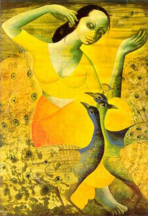

 Вернее было бы сказать — цивилизации Древней Индии, т.к. в III — I тысячелетии до нашей эры на территории полуострова Индостан выделялись, как минимум, четыре заметных цивилизационных очага: так называемая Нагадвипа на северо-западе, долина Инда, долина Ганга и южная часть полуострова с островом Ланка.
На северо-западе жили наги, монголоидные племена мон-кхмерской группы, поклонявшиеся змеям и оказавшие в своё время огромное влияние на культуру и мифологию остальных этносов Индии. Но о нагах мы будем подробно говорить, когда будем рассматривать древние цивилизации Индокитая.
На собственно тамильско-сингальской культуре юга Индии мы тоже подробно останавливаться не станем, а упомянем о ней позже, когда будем говорить об арийской экспансии, брахманизме, индуизме и становлении более менее единой культуры и цивилизации на всей территории полуострова.
Долина Инда связывается в нашем сознании с культурой Мохенджо-Даро (холма мёртвых) и Хараппы, крупнейших городов доарийской цивилизации Индии, раскопанных индийским археологом Р. Д. Банерджи (типа, последний из бруненджи… а-а-а…). Памятники этой культуры датируются археологами примерно XXIV в. до н. э. Выстроенные из кирпича городские строения (дома, дворцы, цитадели, зернохранилища), бассейны с хорошо налаженной системой канализации и даже соединённое каналом с рекой сооружение типа верфи свидетельствуют о высоком уровне градостроительства и позволяет предполагать существование развитого ремесла и торговых связей с соседями, прежде всего — с шумерским Двуречьем. Невозможно точно установить, в какой степени культура шумеров повлияла на становление индской цивилизации и следует ли считать её центры шумерскими колониями, но сам факт влияния со стороны более развитого Двуречья не вызывает сомнений у большинства историков и культурологов. К этому надлежит добавить, что населяли индские центры европеоиды, антропологически близкие населению ближневосточного региона. Под влиянием, имеются в виду, конечно, не прямые заимствования — здесь иной тип архитектуры, иная письменность, хотя и близкая к шумерской (но, кстати, до сих пор не расшифрованная). Однако связи несомненны, причём не только внешнеторговые, наличие которых доказывается не только наличием верфи, но также и находками индских печатей при раскопках в Двуречье, но и структурные, сущностные: однотипные строительные материалы (кирпич), технические достижения (прежде всего бронза), похожее начертание знаков письменности, предположительно та же, что и в ранних обществах Двуречья, протогосударственная структура с властью-собственностью правящих кругов и важной ролью централизованной редистрибуции. Историки делают эти предположения, исходя из наличия верфи, дворцов и огромных зернохранилищ. Кроме того сам облик больших и богатых городов заставляет полагать, что к ним примыкала обширная земледельческая периферия, за счёт налогов с которой существовали освобождённые от производства слои населения: правители, воины, жрецы, о наличии которых говорят не только дворцы но и найденные скульптурные изображения последних из бронзы, меди, белого стеатита. О религии жителей Мохенджо-Даро нельзя сказать ничего определённого. Встречающиеся изображения быка, слона и тигра на стеатитовых печатях дают возможность предположить какую-то форму культа животных. Находятся следы культа деревьев. Встречаются человеческие фигурки, возможно изображающие божеств. Найдено несколько изображений мужской фигуры с рогами и тремя лицами. Остатков храмов нет, но бассейны в домах и большой, видимо общественный, бассейн, возможно, указывают на то, что практиковались обрядовые омовения. Всё это, разумеется неточно, но это всё, что у нас есть. О кастах, рабах, типе собственности на средства производства и т.д. мы ничего не знаем. Но, как бы то ни было, на сегодняшний день установлено достаточно точно, что хараппская культура долины Инда исчезла, почти не оказав существенного воздействия на пришедшую ей на смену с разрывом в несколько веков культуру индоариев, положивших практически заново начало древнеиндийскому очагу цивилизации1.
Итак, консолидировавшиеся на рубеже III — II тысячелетий до н.э. в районе Причерноморья и Прикаспия (а возможно в Малой Азии и на Кавказе) племена индоевропейской группы с начала II тысячелетия начинают энергично мигрировать в самых разных направлениях. В том числе проникают арии и в Индию, заселяя в первую очередь Пенджаб и верховья Ганга. Всё новые и новые волны ариев накатываются на Индию, осваивая и заселяя постепенно до того слабо заселённую долину Ганга, оттесняя и частично ассимилируя местные сравнительно отсталые племена. Именно арии, их язык и культура, включая её религиозно-мировоззренческую основу, на тысячелетия вперёд, вплоть до наших дней, определили путь и, если так можно сказать, дух индийской цивилизации. Их имя до сих пор сохранилось в одном из названий Индии — Арьяварта — Земля Ариев. Что же это были за люди и какую культуру они принесли с собой?
Первое, что приходит на ум в связи с поставленным вопросом, — это веды. Само слово «веда» (сравните с русским «ведать», «ведовство») обозначает всю область сакрального, священного знания, которое делится на четыре основных свода-самхиты: Ригведа (книга гимнов — древнейшая и наиболее почитаемая из вед), Самаведа (извлечения из тех же гимнов), Яджурведа (книга поклонения) и наиболее поздняя Атхарваведа (книга магических заклинаний). Веды говорят о богах и о том, как нужно им поклоняться. В ведах насчитывается 33 бога, хотя в одном месте вед есть упоминание о 3399 богах. Боги делились на земных, небесных и промежуточных. Наиболее почитаемым богом ариев можно считать Индру, бога дождя и грома, бога-воина: лично ему посвящены 250 гимнов, часто упоминается он и в гимнах, посвященных другим богам. Ещё один важный ведический бог — Варуна, божество ночного неба и небесных и земных вод. Большим уважением пользовался и Агни, бог огня, возносящего жертвы. В ведах ему посвящено около 200 гимнов. Обращаются к нему в гимнах так, как обращались бы к настоящему огню. Вот отрывок одного из таких гимнов: «Тебя, Агни, нашли древние мудрецы Агнирасы, спрятанного, находящегося в каждом дереве. Ты рождаешься, добываемый трением, как великая сила…» Важное место в ведах занимает также Сома — опьяняющий напиток и одноимённое божество, являющееся его олицетворением. Кто был главным богом древних ариев? На этот вопрос исследователи отвечают по-разному. Одни считают, что это был Индра. Другие выделяют триаду верховных богов: Индра, Варуна и Агни. Третьи полагают, что для ария в каждый данный момент главным был то бог, к которому он в этот самый момент обращался. Четвёртые же думают, что ведийские арии поклонялись Единому Богу, выступающему в различных воплощениях и под разными именами. Те, кто придерживается последних двух точек зрения ссылаются на то, что практически каждое божество вед в посвященных ему гимнах называется «вседержителем», «царём всей вселенной» и т.д. Помимо представлений о богах и ритуальных формул веды содержат представления древних индийцев о пространстве, которые у них, надо сказать, были весьма сложными: кроме вполне обычных для большинства религий понятий неба и земли, верха и низа, в ведах присутствуют такие понятия как «беспредельное пространство», «мировая иллюзия», «материя», «энергия» и т.д. Заметим, что веды и примыкающие к ним тексты — араньяки и упанишады — называются шрути — «услышанное» — и по сей день заучиваются наизусть и передаются из уст в уста, хотя, естественно, они давно записаны. Веды и упанишады — это очень объёмные тексты. В одной только Ригведе содержится 1028 гимнов. Понятно, что для того, чтобы выучить это всё, нужно потратить невероятно много времени — почти всю жизнь, и человеку, который этим занимается, на другие дела времени не остаётся: заучивание и воспроизведение вед становится его основным занятием. Такой человек называется брахман. И тут мы вплотную подошли ко второму основополагающему моменту индийской цивилизации — системе варн.
Слово «варна» соответствует понятиям «вид», «разряд», «цвет». С глубокой древности это слово используется в Индии для обозначения и противопоставления друг другу основных сословий, социальных слоёв общества. Варновое деление зафиксировано ещё в Ригведе и объясняется и оправдывается тем, что из уст первочеловека Пуруши произошла варна жрецов-брахманов, из его рук — варна воинов и правителей — кшатриев, из бёдер — варна простых общинников и земледельцев — вайшьев, а из его ступней — варна неполноправных шудр. Родившись в той или иной варне, человек оставался в ней на всю жизнь. Принадлежностью к варне определялся круг его прав, обязанностей и привилегий. Брахманы были жрецами и хранителями знания, они заучивали и толковали веды, пели гимны богам, руководили жертвоприношениями, занимались науками. Кшатрии были царями (раджами), воинами и чиновниками, а также руководили некоторыми специфическими, «кшатрийскими», религиозными церемониями, например — ашвамедхой (жертвоприношением коня). Вайшьи занимались земледелием, животноводством и торговлей. Эти три варны были преимущественно чисто арийскими, считались высшими и назывались «дваждырождёнными», ибо по отношению к ним исполнялся обряд «второго рождения», т.е. инициации, который производился в детстве и сопровождался надеванием на посвящаемого шнура, пропускаемого под правой рукой. Цвет и материал шнура соответствовал варне: цвет брахманов — белый, кшатриев — красный, вайшьев — жёлтый. Первоначально варны дваждырождённых резко противостояли четвёртой варне — шудрам, которая состояла преимущественно из представителей неарийских племён, подчинённых ариями. В основном это были дравиды и представители других аборигенных этносов. Шудры занимались ремёслами, были слугами, выполняли самую чёрную работу. Цветом варны шудр считался чёрный. Как ни странно, специфическим занятием варны шудр считалось и врачевание. Шудра не имел права владеть землёй, изучать веды и участвовать в любых религиозных практиках. Последняя форма неравноправия была особенна чувствительна — ведь в Индии религиозно-ритуальной стороне жизни придавалось невероятно большое значение2.
Однако, со временем в положении варн происходили некоторые изменения. Статус третьей, вайшьев, несколько снизился, а статус четвёртой, шудр, наоборот. несколько возрос. Варна вайшьев постепенно утеряла свои арийские привелегии, включая обряд второго рождения. Варна же шудр приобрела некоторые права, например, шудры-главы семейств получили право совершать некоторые несложные домашние обряды. Таким образом, к середине I тысячелетия, две высшие варны уже отчётливо противостояли двум низшим, что вполне отражало социальные реалии: священнослужители, цари и дружинники — сверху, слуги и производители — снизу.
Были в древнеиндийском обществе и рабы, даса. Однако интересно то, что этим словом означались и совершенно бесправные рабы-иноплеменники, и арии, попавшие в так называемое долговое рабство. Последние, в отличие от первых, сохраняли принадлежность к своей (часто высшей!) варне и присущие ей привилегии. Рабу-брахману хозяин был обязан оказывать знаки внешнего почтения и мог требовать от него выполнения лишь несложной работы, не унижающей его варнового достоинства. Рабыни-иноплеменницы чаще всего были наложницами глав семейств трёх первых варн. Статус же детей этих рабынь колебался в разное время в зависимости от обстоятельств от даса до полноправных членов варн.
Экономической основой древнеиндийского общества была сельская община. В ней довольно долго сохранялось коллективное землевладение. Хотя пахотная земля и была поделена на индивидуальные наследственные наделы, многие работы считались общим делом и выполнялись всеми членами общины совместно. Практиковались в общине щедрые раздачи и угощения, особенно в дни семейных праздников. Часто в таких случаях семья готова была залезть в огромные долги, но поддержать свой престиж, как следует угостив односельчан. Использовались такие раздачи и перед выборами панчаята (совета общины, состоявшего из пяти человек) и старейшины, руководителя общины. Община была довольно-таки самодостаточной системой. Она вела натуральное хозяйство, выделяя лишь шестую долю урожая радже. На свои средства община содержала необходимых ей ремесленников: гончара, кузнеца, плотника, цирюлбника, ювелира, а также жреца-предсказателя и раба-мусорщика. Все работники получали строго определённую плату(в основном продуктами питания и необходимыми услугами). Кроме того, община своими силами решала внутренние споры, имея в своём распоряжении ряд чувствительных административных санкций — от штрафов до изгнания из коллектива. Особо надо отметить, что члены общины не несли воинской повинности — война была исключительным делом кшатриев, которые в свою очередь не обрабатывали земли. Если же кшатрии владели земельными наделами, то эти наделы обрабатывались вайшьями-арендаторами или наёмными работниками, которые назывались кармакарами.
Постепенно арии захватывали и осваивали всё большие и большие территории. И под их власть попадали всё новые и новые местные племена. Теоретически, все они должны бы были пополнять низшую варну шудр, но на практике получалось иначе. В туземных племенах были и правители, и жрецы местных богов, объявлявшихся ариями инкарнациями(воплощениями, проявлениями) богов ведийских, и земледельцы. Часто, попав в подчинение к ариям, они продолжали выполнять свои прежние обязанности, что уж никак не могло соответствовать принадлежности к варне шудр. Нельзя было оставлять их и вне варн, ибо, во-первых, варновая система была освящена ведами, чей авторитет непререкаем, а во-вторых, люди вне варн считаются чандалами или млечха, неприкасаемыми, лишь прикосновение к ним или к предметам, им принадлежащим, могло осквернить члена арийской варны, после чего он должен был пройти обряд очищения водой Ганга (в некоторых случаях — огнём), а иногда и изгонялся из варны, сам становясь млечха. А ведь ариям было необходимо как-то контактировать с местной знатью, питаться продуктами, выращенными местными крестьянами, пользоваться различными предметами, произведёнными туземными ремесленниками. Другим неудобством варновой системы были различные движения внутри самих варн. Наследственных кшатриев становилось меньше (во многом из-за войн и взаимного истребления), и власть в различных царствах стали захватывать представители других варн. Часто это были вайшьи и шудры, из числа которых к началу нашей эры вышло немало зажиточных (и даже очень богатых) городских жителей. Число брахманов росло. Их не было нужно столько для жреческих нужд, да и не все из них были склонны к их исполнению, не все имели и соответствующие способности. Многим из них приходилось осваивать неприсущие их варне занятия, вплоть до весьма непрестижных. Получался парадокс: градация варн оставалась прежней с соответствующими привилегиями и наказаниями в случае правонарушений для членов каждой из них, но она уже не отвечала реальной жизни. Нужна была корректировка. Этому же способствовал и рост внутреннего разделения по специализациям в рамках каждой из варн. Те, кто оставался в пределах варны, но специализировался на какой-то узкой сфере своих издревле широких функций, начинал существенно отличаться от остальных. Особенно это было заметно, если специализация шла уже не в первом поколении. Это способствовало делению варн на более мелкие подразделения. Ещё одним фактором, способствовавшем изменению варновой структуры, было то, что в джунглях жили племена, вообще ещё не знакомые с земледелием и скотоводством, занимающиеся охотой и рыболовством. И им тоже было необходимо найти какое-то место в иерархически организованной системе замкнутых сословных групп. Все эти и некоторые другие условия привели к превращению системы варн в более дробную и очень хорошо организованную систему каст или джати. Те, кто стоял вне касты или родился от смешанного брака, определялись или организовывались в новую касту, которая включалась в систему, становясь сначала, как правило, на низшую ступень сложившейся иерархии. Кастами могли стать и становились племена, секты, цеха, группы лиц сходных занятий. Принципиальным отличием новых каст от старых варн было то, что касты были корпорациями, т.е. имели чёткую внутреннюю структуру — органы управления, кассы взаимопомощи, свои обряды и ритуалы, кухню, регламент профессиональных обязанностей, привычки, украшения, кастовые знаки и т.д. Одно лишь осталось неизменным: каждый принадлежал к своей касте по рождению, какой бы профессией он ни овладел, как бы ни разбогател или, наоборот, ни опустился, брахман всю жизнь останется брахманом, а чандала — чандалой. Возможно предположение, что такая невозможность существенно изменить свою жизнь должна была бы тормозить развитие индийской цивилизации, ибо, казалось бы, зачем человеку добросовестно выполнять свои обязанности и к чему-то стремиться, если, что бы он ни делал, он не сможет получить больше уважения и привилегий, чем положено ему в соотсетствии с кастовой принадлежностью, а за пределы касты вырваться нельзя — разве что стать неприкасаемым и всеми презираемым млечха? Но тут вступал в дело ещё один из важнейших индийских социальных институтов — вера в карму.
Карма — это сумма твоих деяний в этой жизни и воздаяние за них в следующей. Грубо говоря, если даса-мусорщик в этой жизни хорошо убирает мусор и с почтением относится к представителям высших каст, то в следующей жизни он родится брахманом, а если он всё делает плохо, не так, как ему положено, то он может родиться представителем ещё более низкой касты, а то и вообще животным, червяком каким-нибудь или клопом. Так же и брахман, нарушивший какие-либо предписания может родиться в следующей жизни чандалой, а вёдший жизнь благую, может вновь родиться брахманом, а то и вообще — каким-нибудь полубожественным существом.
Итак, именно вышеперечисленные институты — авторитет вед, варново-кастовая система, община и вера в карму составляли основу всей древнеиндийской цивилизации, именно они определяли культуру, искусство, характер социальных коммуникаций и весь образ жизни этой страны.
Литература.
Васильев Л. С. История Востока: В 2 т. Т. 1: Учеб. по спец. «История». — М.: Высш. шк., 1994. — С. 151-177, 235-238;
Драч Г. В. Послеосевые культуры Древнего Востока // Культурология: Учебное пособ. для студентов высш. уч. заведений. — РнД.: Феникс, 1995. — С. 168-170;
Иванов Вяч. Вс. Опыт истолкования ритуальных и мифологических терминов, образованных от ASVA- 'конь'// Из работ московского семиотического круга. — М.: Языки русской культуры, 1997. — С. 171-220;
Корабельник Надежда. Древняя Индия // Энциклопедия для детей. Т. 1: Всемирная История. — М.: Аванта+, 1994. — С. 90-95;
Прабхупада А. Ч. Бхактиведанта Свами, шри. Лекция, прочитанная 6 октября 1969 года в Конвей-Холле (Лондон, Англия) // Шри Ишопанишад. — Тверь: Бхактиведанта Бук Траст, 1990. — С. 7-17;
Сидоров В. А. Индия: Общие сведения; Историческая справка // Советская военная энциклопедия: В 8 т. Т. 3: Гражданская — Йокота. — М.: Воен. издат МО СССР, 1977. — С. 526-527;
Токарев С. А. Религия в истории народов мира. — М.: Политиздат, 1986. — С. 274-293;
Топоров В. Н. Асуры // Мифы народов мира. Энциклопедия: В 2 т. Т. 1: А-К. — М.: Сов. энциклопедия, 1991. — С. 118-119;
Топоров В. Н. Ведийская мифология // Там же. — С. 220-226.